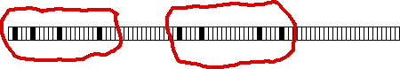
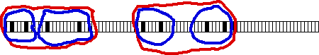

| Note the occurrences of know organize themselves
into hierarchical clusters, that is, clusters within clusters |
|  |
| There are two clusters, |
|  |
| each made of two clusters (the left is less clear than the right), |
|
| each made of two occurrences. |
|
| The fractal structure is apparent: clusters arranged in hierarchies. |
| Almost surely, Stevens did not engineer these patterns into
his poems. |
| Although he had some technical training (What did Wallace Stevens and
Franz Kafka have in common? Answer),
it is unlikely Stevens was aware of the mathematical constructions extant when he
was writing and that later became part of fractal geometry. |
| |
| Here are some possible explanations. |
| Hierarchy is an important aspect of
language, and of music. Stevens' poetry is widely regarded as
exhibiting a musical style, so it comes as no surprise that his
poetry would contain a hierarchy of repetitions. |
| But why a fractal pattern? |
| Perhaps this
repetition across scales set in motion, in the mind's ear, an infinite regress to smaller
and smaller scales, strengthening the sense in which a poem gives a window on another
world in only a few lines. |
| We imagine Stevens was aware, at least subconsciously, of
the repetition across scales found in nature. Through the process of rewriting, he
restructured the poem, perhaps inducing repetitions that sounded like the nature
surrounding him. |
|